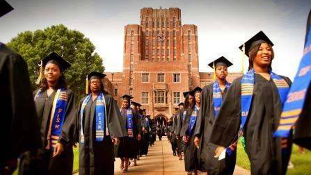

Identification.
Gabon is a French equatorial country, home to over forty ethnic groups. The largest group is the Fang, forming 40 percent of the population. Other major groups are the Teke, the Eshira, and the Pounou. As in many African countries, the borders of Gabon do not correspond to the borders of the ethnic groups. The Fang, for example, inhabit northern Gabon, Equatorial Guinea, southern Cameroon, and the western part of the Republic of Congo. The cultures of the ethnic groups are akin to other groups in Central Africa, and center around the rain forest and its treasures. Food preferences, farming practices, and quality of life are comparable. The ceremonial traditions vary, however, as do the personalities of the groups. There are ongoing debates about the differences in these groups and their significance.
Location and Geography.
Gabon covers 103,347 square miles (267,667 square kilometers). It is slightly smaller than the state of Colorado. Gabon is on the west coast of Africa, centered on the equator. It borders Equatorial Guinea and Cameroon to the north, and the Republic of Congo to the east and south. The capital, Libreville, is on the west coast in the north. It is in Fang territory, though it was not chosen for this reason. Libreville ("free town") was the landing place for a ship of freed slaves in the 1800s, and later became the capital. Over 80 percent of Gabon is tropical rain forest, with a plateau region in the south. There are nine provinces named after the rivers that separate them.
Demography.
There are roughly 1,200,500 Gabonese. There are equal numbers of men and women. The original inhabitants were the Pygmies, but only a few thousand remain. Of the total population, 60 percent live in the cities while 40 percent inhabit the villages. There is also a large population of Africans from other countries who have come to Gabon to find work.
Linguistic Affiliation.
The national language is French, which is mandatory in school. It is spoken by the majority of the population under the age of fifty. The use of a common language is extremely helpful in the cities, where Gabonese from all of the different ethnic groups come together to live. Most Gabonese speak at least two languages, as each ethnic group has its own language as well.
Symbolism.
The Gabonese flag is made of three horizontal stripes: green, yellow, and blue. Green symbolizes the forest, yellow the equatorial sun, and blue the water from the sky and sea. The forest and its animals are greatly valued as well, and are portrayed on the Gabonese currency.
History and Ethnic Relations

Emergence of the Nation. Tools from the Old Stone Age indicate early life in Gabon, but little is known of its people. The Myene had arrived in Gabon by the thirteenth century and settled as a fishing community along the coast. With the exception of the Fang, Gabon's ethnic groups are Bantu and arrived in Gabon after the Myene. The different ethnic groups were separated from one another by the dense forest and remained intact. Europeans began to arrive at the end of the fifteenth century. The Portuguese, French, Dutch, and English participated in the slave trade that flourished for 350 years. In 1839, the first lasting European settlement was started by the French. Ten years later, Libreville was founded by freed slaves. During this time, the Fang were migrating from Cameroon into Gabon. The French obtained control inland and stymied the Fang migration, thus concentrating them in the north. In 1866, the French appointed a governor with the approval of the Myene leader. At the start of the twentieth century, Gabon became part of
French Equatorial Africa, which also included the present-day nations of Cameroon, Chad, the Democratic Republic of Congo, and the Central African Republic. Gabon remained an overseas territory of France until its independence in 1960.
National Identity. The Gabonese are proud of their country's resources and prosperity. They carve their lives from the forest. They fish, hunt, and farm. Each ethnic group has ceremonies for birth, death, initiation, and healing, and for casting out evil spirits, though the specifics of the ceremonies vary widely from group to group. The Gabonese are very spiritual and dynamic.
Ethnic Relations. There are no major conflicts between the groups in Gabon, and intermarriage is common. The ethnic groups are not contained within Gabon. Many groups spill over the borders into the neighboring countries. The borders were chosen by European colonials trying to parcel out territories; little consideration was given to the natural borders formed by the ethnic groups, which were then split by the new lines.
Urbanism, Architecture, and the Use of Space
As a building material, cement is seen as a sign of wealth. The cities are rife with it, and all of the government buildings are constructed in cement. In the capital, it is easy to differentiate between buildings that were styled by Gabonese and those done by outside architects. In the villages, the architecture is different. The structures are impermanent. The most economical houses are made from mud and covered in palm fronds. There are houses built from wood, bark, and brick. The brick houses are often plastered with a thin layer of cement with roofs made from corrugated tin. A wealthy family might build with cinder blocks. In addition to the houses, both men and women have distinctive gathering places. The women each have a cuisine, a kitchen hut filled with pots and pans, wood for fire, and bamboo beds set against the walls for sitting and resting. The men have open structures called corps de guards, or gatherings of men. The walls are waist high and open to the roof. They are lined in benches with a central fire.
Food and Economy
Food in Daily Life. The staples vary little among the groups in Gabon. The groups share a landscape and climate, and thus are able to produce the same kinds of things. Bananas, papayas, pineapples, guavas, mangoes, bushbutter, avocado, and coconuts are the fruits. Eggplants, bitter eggplants, feed corn, sugarcane, peanuts, plantains, and tomatoes are also found. Cassava is the main starch. It is a tuber with little nutritional value, but fills the stomach. Its young leaves are picked and used as a vegetable. Protein comes from the sea and rivers, as well as from bush meat hunted by the men.
Food Customs at Ceremonial Occasions. Wines are made from palm trees and sugarcane. The palm wine, in conjunction with a hallucinogenic root called eboga, is used during ceremonies for death, healing, and initiation. In small doses, eboga acts as a stimulant, making it useful for all-night ceremonies. In larger quantities, it is hallucinogenic, allowing participants to "see their ancestors." Food and wine are offered to the ancestors during the ceremonies, and both men and women partake in these rituals, which are full of drumming, singing and dancing.
Basic Economy. In the villages, the Gabonese are able to provide themselves virtually everything they need. They buy only soap, salt, and medicine. In the cities, however, most of the goods sold are imported and marketed by foreigners. The Gabonese produce enough bananas, plantains, sugar, and soap to export to nearby cities, but 90 percent of the food is imported. West Africans and Lebanese hold title to many of the shops, and women from Cameroon dominate the open markets.
Land Tenure and Property. Virtually everything is owned by someone. Each village is considered to own three miles (4.8 kilometers) into the forest in every direction. This area is split among the families, and the best locations are given to the elders. Property is passed down paternally or maternally, depending on the ethnic group. The rest of the land belongs to the government.
Major Industries. Gabon has many riches. It is one of the world's largest producers of manganese, and is the world's largest producer of okoume, a softwood used to make plywood. President Omar Bongo has sold the rights to the majority of the forest to French and Asian lumber companies. Oil is another major export, and the petroleum revenues form over half of Gabon's annual budget. Lead and silver have also been discovered, and there are large deposits of untapped iron ore that cannot be reached because of the lack of infrastructure.
Trade. Gabon's currency, the Communaute Financiere Africaine, is automatically converted into French francs, thus giving trading partners confidence in its security. The bulk of the crude oil goes to France, the United States, Brazil, and Argentina. Major export items include manganese, forest products, and oil. Overall, France receives more than one-third of Gabon's exports and contributes half of its imports. Gabon also trades with other European nations, the United States, and Japan.
Division of Labor. In 1998, 60 percent of workers were employed in the industrial sector, 30 percent in services, and 10 percent in agricultural.
Children born within marriage belong to their fathers; women are expected to have children before marrying so they will still have something should the couple separate.
Children born within marriage belong to their fathers; women are expected to have children before marrying so they will still have something should the couple separate.
Social Stratification
Classes and Castes. Though the per capita income is four times that of other sub-Saharan African nations, the majority of this wealth is in the hands of a few. The cities are filled with poverty, which is less noticeable in the villages. The villagers provide for themselves and have less of a need for money. Village families assess relative affluence by how many chickens and goats they have, how many pots are in the kitchen, and how many changes of clothes each person has. Official caste systems are not present.
Symbols of Social Stratification. The more affluent in society wear freshly starched clothes, in both Western and African styles. The Gabonese are accustomed to being shunned and condescended to by government officials, postal workers, and other important figures; once one has reached a higher level oneself, the temptation to respond in kind is enticing. The educated Gabonese speak Parisian French, while the rest of the country speaks a French that has absorbed the rhythm and accent of their local language.
Political Life
Government. Gabon has three branches of government. The executive branch includes the president, his prime minister, and his Council of Ministers, all appointed by him. The legislative branch is made up of the 120-seat National Assembly and the 91-seat Senate, both of which are elected every five years. The judicial branch includes the Supreme Court, the High Court of Justice, an appellate court, and a state security court.
Leadership and Political Officials. When Gabon gained its independence in 1960, Leon M'ba, the former governor to Gabon, slid into the presidency. He survived a coup and remained in power until his death in 1967. Vice President Albert Bernard Bongo took his place. Bongo, who later took the Islamic name El Hadj Omar Bongo, was reelected in 1973 and has been the president ever since. Elections are held every seven years, and Bongo has continued to win by a slender margin. Bongo's party, the Gabon Democratic Party (or PDG) has had competition since other parties were legalized in 1990, but the other two main parties, the Gabonese People's Union and the National Rally of Woodcutters, have been unable to gain control. Before each election, Bongo travels the country giving speeches and handing out money and clothing. He uses the budget to do this, and there is a debate over whether or not the elections are handled fairly.
Social Problems and Control. The formality of crime response is debatable. It hinges on who is victimized as much as who is in charge. Little is done to protect African immigrants, but if a European is hurt the police will try harder. There is a lot of corruption, however, and if money changes hands the criminal could be released and no record kept. For this reason, the law is often more informal. A town will ostracize someone for having stolen something, but no formal charge will be taken. Things will be passed by word of mouth, and the criminal will be cast out. In extreme cases, a village might seek an nganga, or medicine man, to cast a spell on the person.
Military Activity. Gabon's troops stay within its borders. Out of the nation's overall budget, 1.6 percent goes to the military, including an army, navy, air force, the Republican Guard to protect the president and other officials, the National Gendarmerie, and the National Police. The military employs 143,278 people, with concentrations in the cities and along Gabon's southern and eastern borders to repel Congolese immigrants and refugees. There is also a large presence of the French military.
Social Welfare and Change Programs
The PNLS (National Program to Fight Against Aids) has an office in every major city. It sells condoms and educates women on family planning and pregnancy. There is also a Forests and Waters office in every city, working to protect the environment and wildlife from exploitation, though its effectiveness is questioned.
Nongovernmental Organizations and Other Associations
The World Wildlife Fund has ecological and sociological research and wildlife preservation projects in the north and on the coast, and the United Nations supports agricultural advancements in the north by sponsoring extensionists and providing training and mopeds. The United States Children's Fund (UNICEF) is also present, working against child prostitution and infant mortality. A German organization, GTZ, funds the organization of the Gabonese National Forestry School. The Peace Corps is active in Gabon as well, with programs in construction, health, agriculture, fisheries, women in development, and environmental education.
Gender Roles and Statuses
Division of Labor by Gender. The expectations of labor are different for women and men. Women raise their many children, farm, prepare food, and do the household chores. In the villages, the men build a house for the family as well as a cuisine for each wife taken. The men handle cash crops if there are any, and may have jobs fishing or building, or in offices in the cities. The women also work in the cities as secretaries—there are exceptional women who have risen to positions of power in spite of the underlying male dominance in the workplace. The children help with the chores, do laundry and dishes, run errands, and clean house.
The Relative Status of Women and Men.
Though debatable, men seem to have higher status than women. They make the financial decisions and control the family, though the women add input and are often outspoken. The men dominate the government, the military, and the schools, while the women do the majority of the manual labor for the family.
Gabon women have traditionally assumed a house-bound role.
Gabon women have traditionally assumed a house-bound role.
Marriage, Family, and Kinship
Marriage.
Virtually everyone is married, but few of these marriages are legal. To legalize a marriage it must be done at the mayor's office in a city, and this is rare. Women choose men who will be able to provide for them, while men choose women who will bear children and keep their home. Polygyny is practiced in Gabon, but having more than one woman becomes expensive and has become a sign of wealth as much as it is an indulgence. Divorce is uncommon but not unheard of. Marriages can be business arrangements, at times, though some couples marry for love. It is expected for women to have several children before wedlock. These children will then belong to the mother. In a marriage, however, the children are the father's. If the couple splits up, the husband takes the children. Without premarital offspring, the wife would have nothing.
Domestic Unit. Families stay together. When a couple is wed, they traditionally move to the husband's village. That village will hold his family, including brothers and their families, parents, aunts, uncles, grandparents, children, and nieces and nephews. It is not uncommon for families to share a home with their parents and extended relatives. Everyone is welcome and there is always room for one more.
Kin Groups. Within each ethnic group are tribes. Each tribe lives in the same area and comes from a common ancestor. For this reason, people cannot marry members of their tribe.
Socialization
Infant Care.
Babies stay with their mothers. There are no cribs or playpens, and the infants are tied to their mothers' backs with a sheet of cloth when the mothers are busy, and sleep next to the mother on the same bed. Perhaps because they are so physically close all the time, the babies are remarkably calm and quiet.
Child Rearing and Education. Children are raised communally. Mothers care for their children and any neighboring children who may be present. In addition, older siblings take care of the younger ones. The children sleep in the cuisine (kitchen hut) with their mother, but are relatively free within the village during the day. They begin school at age five or six. When there is not money for books and supplies, the children will not go to school until there is. Sometimes a wealthy relative will be called upon to provide these things. Both boys and girls attend school until they are sixteen by law, though this may not always occur for the above reason. The girls may begin to have children at this point, and the boys continue school or begin to work. Approximately 60 percent of Gabonese are literate.
Higher Education.
The Omar Bongo University in Libreville offers two to three year programs in many subjects, as well as advanced studies in select fields. The University of Science and Technology in the south is relatively new, and diversifies the options. These schools are dominated by upper-class men. Women have a difficult time excelling in academics, as the subjects and standards are structured for men. Some Gabonese study abroad in other African countries or in France, at both undergraduate and graduate levels.
Etiquette
Gabonese are very communal. Personal space is neither needed nor respected. When people are interested in something, they stare at it. It is not rude to call something what it is, to identify someone by his or her race, or to ask someone for something that is wanted. Foreigners are often offended by this. They may feel personally invaded by having someone stand in their space, insulted at being called white, and put off by people who ask them for their watch and shoes. None of these things are meant in a negative way, however, as they simply reflect the up-front nature of the Gabonese. Conversely, celebrity figures are treated with incredible respect. They are the first to sit, and the first to be fed, and are catered to with detail, regardless of their moral standing in society.
Religion
Religious Beliefs
There are several different belief systems in Gabon. The majority of the Gabonese are Christian. There are three times as many Roman Catholics as Protestants. There are many foreign clergy, though the Protestants have Gabonese pastors in the north. These beliefs are simultaneously held with Bwiti, an ancestral worship. There are also several thousand Muslims, most of whom have immigrated from other African countries.
Rituals and Holy Places. The Bwiti ceremonies, performed to worship the ancestors, are led by ngangas (medicine men). There are special wooden temples for these ceremonies, and participants dress in bright costumes, paint their faces white, remove their shoes, and cover their heads.
Death and the Afterlife. After death, bodies are rubbed and anointed to remove rigor mortis. Because of the tropical climate, the bodies are interred within two days. They are buried in a wooden coffin. The deceased then joins the ancestors who are to be worshiped with the Bwiti ceremonies. They can be asked for advice, and for remedies for disease. There is a retraite de deuil ceremony one year after death to end the mourning period.
Medicine and Health Care
Health facilities are inadequate. Hospitals are ill-equipped, and patients buy their own medications from pharmacies before treatment can begin. Malaria, tuberculosis, syphilis, AIDS, and other infectious diseases are widespread and virtually untreated. Many villagers also turn to the ngangas for remedies, as modern health care is expensive and distant.
Secular Celebrations
Gabon's Independence Day, 17 August, is full of parades and speeches. New Year's Day is also celebrated throughout the country.
Gabon children enjoy relative freedom in their villages and start school at the age of five or six.
Gabon children enjoy relative freedom in their villages and start school at the age of five or six.
The Arts and The Humanities
Support for the Arts. International Center for Bantu Civilizations was created in Libreville in 1983, and there is a Gabonese Museum featuring Gabon's history and artistic relics. There is also a French Cultural Center in the capital which displays artistic creations and features dance groups and chorales. There is an annual cultural celebration as well, with performances by musicians and dancers from many different groups in celebration of Gabon's diversity.
Literature. Much of Gabon's literature is strongly influenced by France, as many authors received their schooling there. Writers use French, newspapers are in French, and television is broadcast in French. Radio programs use both French and local languages, however, and there is mounting interest in the history of Gabon's peoples.
Arts. The Fang make masks and basketry, carvings, and sculptures. Fang art is characterized by organized clarity and distinct lines and shapes. Bieri, boxes to hold the remains of ancestors, are carved with protective figures. Masks are worn in ceremonies and for hunting. The faces are painted white with black features. Myene art centers around Myene rituals for death. Female ancestors are represented by white painted masks worn by the male relatives. The Bekota use brass and copper to cover their carvings. They use baskets to hold ancestral remains. Tourism is rare in Gabon, and unlike in other African countries, art is not spurred on by the prospect of capitalism.
The State of the Physical and Social Sciences
The Omar Bongo University in Libreville and the University of Science and Technology in the south are the main facilities in Gabon. Doctoral students and other private individuals and organizations conduct sociological and anthropological studies throughout Gabon, and chemical companies search for new treasures in the rain forest. Resources are dim, however, and when evidence is collected, scholars often travel to other countries to seek superior facilities.
Read more: http://www.everyculture.com/Cr-Ga/Gabon.html#ixzz34qlUywkv